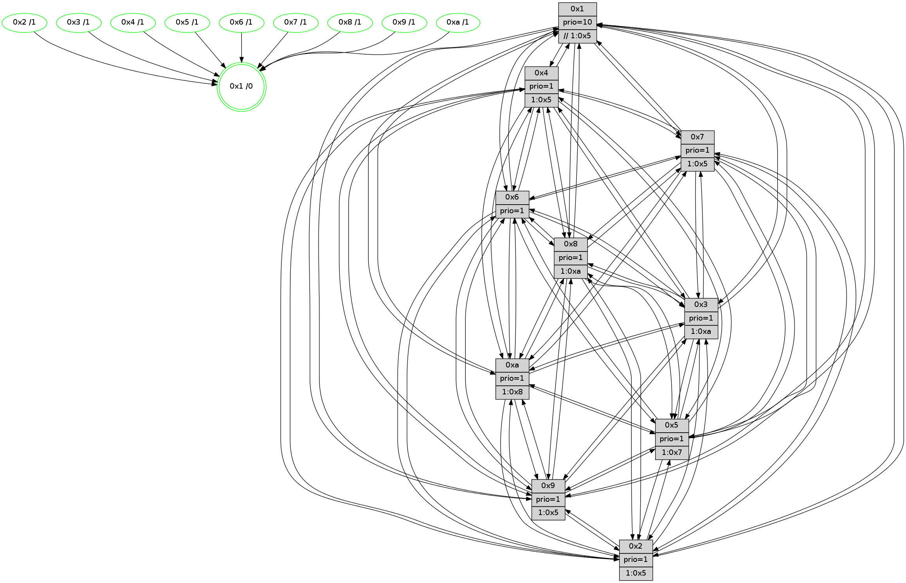

>> << IDX [start] -100 -25 -5 +0 +5 +25 +100 [1110.11700606]
 Previous packets
----------------------------------------------------------------------
1105.388220 beacon01(faad) #0 coord=01,02,03,04,05,06,07,0a,09,08 cycle=688.0ms assoc
-- color-indic=1 64 38 48
1105.398203 beacon02(faad) #0 coord=01,02,03,04,05,06,07,0a,09,08 cycle=688.0ms assoc 64 ab 79
1105.408203 beacon03(faad) #0 coord=01,02,03,04,05,06,07,0a,09,08 cycle=688.0ms assoc 64 d1 34
1105.418203 beacon04(faad) #0 coord=01,02,03,04,05,06,07,0a,09,08 cycle=688.0ms assoc 64 a6 de
1105.428202 beacon05(faad) #0 coord=01,02,03,04,05,06,07,0a,09,08 cycle=688.0ms assoc 64 dc 93
1105.438203 beacon06(faad) #0 coord=01,02,03,04,05,06,07,0a,09,08 cycle=688.0ms assoc 64 52 44
1105.448204 beacon07(faad) #0 coord=01,02,03,04,05,06,07,0a,09,08 cycle=688.0ms assoc 64 28 09
1105.458207 beacon0a(faad) #0 coord=01,02,03,04,05,06,07,0a,09,08 cycle=688.0ms assoc 64 59 02
1105.468209 beacon09(faad) #0 coord=01,02,03,04,05,06,07,0a,09,08 cycle=688.0ms assoc 64 d7 d5
1105.478209 beacon08(faad) #0 coord=01,02,03,04,05,06,07,0a,09,08 cycle=688.0ms assoc 64 ad 98
1105.489796 [Hello(1): seq=615 sym=4,2,9,5,10,3,8,6,7 sysInfo=coloring-mode-on,ColoringModeRequestCalled stat=4:1,7,13,3/2:15,6,12,0/9:11,15,11,7/5:1,5,5,7/10:1,6,15,5/3:14,8,4,5/8:14,4,12,1/6:13,13,14,13/7:15,1,12,13]
1105.493742 [Hello(3): seq=706 sym=1,7,6,2,4,8,9,10,5 sysInfo=hasWarning stat=1:13,13,2,0/7:5,12,6,10/6:7,1,4,5/2:9,7,9,0/4:6,4,10,10/8:2,5,3,2/9:2,3,11,13/10:6,8,8,3/5:0,3,0,14]
1105.496570 [STC(3)->1 #0.165 tree-change,inconsistent-stability,stable,to-color d=1]
1105.498374 [STC(10)->1 #0.165 tree-change,inconsistent-stability,stable,to-color d=1]
1105.500515 [Color(8) seq=328 @0:0 prio=1 >1.@a]
1105.502828 [Color(3) seq=335 @0:0 prio=1 >1.@a]
1105.504934 [Color(10) seq=295 @0:0 prio=1 >1.@8]
1105.506339 [Hello(6): seq=706 sym=2,3,5,4,7,9,8,10,1 sysInfo=hasWarning stat=2:13,7,13,6/3:3,3,11,10/5:12,3,11,0/4:6,13,4,4/7:2,11,13,10/9:9,11,14,7/8:6,12,7,3/10:12,4,1,12/1:8,2,5,1]
1105.509165 [Hello(5): seq=706 sym=7,6,4,3,1,9,8,10,2 sysInfo=hasWarning stat=7:10,11,1,12/6:10,2,2,2/4:9,9,11,11/3:9,14,9,12/1:13,14,8,1/9:10,14,10,8/8:5,4,7,0/10:10,1,7,7/2:7,0,10,4]
1105.514163 [Hello(2): seq=702 sym=4,5,7,6,3,9,8,10,1 sysInfo=hasWarning stat=4:1,7,0,9/5:14,0,6,0/7:6,9,14,12/6:8,7,8,11/3:1,5,6,7/9:10,3,6,6/8:7,10,1,9/10:2,5,11,10/1:1,0,8,0]
1105.523507 [STC(6)->1 #0.165 tree-change,inconsistent-stability,stable,to-color d=1]
1105.526109 [Color(6) seq=338 @0:0 prio=1]
----------------------------------------------------------------------
1106.176352 beacon01(faad) #0 coord=01,02,03,04,05,06,07,0a,09,08 cycle=688.0ms assoc
-- color-indic=1 64 84 4d
1106.186335 beacon02(faad) #0 coord=01,02,03,04,05,06,07,0a,09,08 cycle=688.0ms assoc 64 17 7c
1106.196334 beacon03(faad) #0 coord=01,02,03,04,05,06,07,0a,09,08 cycle=688.0ms assoc 64 6d 31
1106.206335 beacon04(faad) #0 coord=01,02,03,04,05,06,07,0a,09,08 cycle=688.0ms assoc 64 1a db
1106.216335 beacon05(faad) #0 coord=01,02,03,04,05,06,07,0a,09,08 cycle=688.0ms assoc 64 60 96
1106.226336 beacon06(faad) #0 coord=01,02,03,04,05,06,07,0a,09,08 cycle=688.0ms assoc 64 ee 41
1106.236336 beacon07(faad) #0 coord=01,02,03,04,05,06,07,0a,09,08 cycle=688.0ms assoc 64 94 0c
1106.246341 beacon0a(faad) #0 coord=01,02,03,04,05,06,07,0a,09,08 cycle=688.0ms assoc 64 e5 07
1106.256341 beacon09(faad) #0 coord=01,02,03,04,05,06,07,0a,09,08 cycle=688.0ms assoc 64 6b d0
1106.266340 beacon08(faad) #0 coord=01,02,03,04,05,06,07,0a,09,08 cycle=688.0ms assoc 64 11 9d
1106.278198 [Hello(8): seq=650 sym=5,2,3,4,9,6,7,10,1 sysInfo=hasWarning stat=5:7,3,15,0/2:1,0,10,9/3:12,4,15,14/4:14,12,4,10/9:13,3,0,3/6:8,2,14,13/7:14,8,14,3/10:14,11,3,3/1:14,8,3,0]
1106.281071 [Color(1) seq=387 @0:0 prio=10 >>1.@5,1.@6,1.@7]
1106.282832 [Color(2) seq=298 @0:0 prio=1 >1.@4,1.@5,1.@6,1.@7]
1106.285198 [Hello(4): seq=706 sym=5,7,6,2,3,9,8,10,1 sysInfo= stat=5:12,9,10,14/7:3,1,9,9/6:0,14,12,12/2:1,4,3,13/3:14,10,11,10/9:14,10,15,10/8:1,12,14,4/10:14,7,4,12/1:6,3,5,1]
1106.288357 [Color(4) seq=286 @0:0 prio=1 >1.@5,1.@6,1.@7,1.@8]
1106.292385 [Color(5) seq=313 @0:0 prio=1 >1.@7,1.@8,1.@9,1.@a]
1106.295256 [Hello(7): seq=706 sym=2,3,5,6,4,8,9,10,1 sysInfo=hasWarning stat=2:9,12,2,0/3:12,0,2,14/5:0,13,0,1/6:7,3,1,9/4:6,10,3,1/8:13,1,10,1/9:7,14,2,1/10:13,7,4,4/1:14,11,4,0]
1106.298734 [Color(7) seq=265 @0:0 prio=1 >1.@5,1.@6,1.@8,1.@a]
1106.301282 [Hello(9): seq=650 sym=2,5,3,4,7,6,8,10,1 sysInfo=hasWarning stat=2:7,6,8,7/5:14,7,8,5/3:10,13,13,14/4:2,6,0,1/7:5,9,1,0/6:6,9,4,11/8:13,7,11,3/10:15,11,15,3/1:12,1,4,1]
1106.305052 [Hello(10): seq=639 sym=6,2,3,8,7,5,9,4,1 sysInfo=hasWarning stat=6:11,3,14,6/2:11,9,1,9/3:13,9,4,10/8:5,10,6,0/7:14,5,13,5/5:2,9,11,14/9:8,11,14,2/4:1,11,14,9/1:15,3,14,1]
1106.310628 [Color(9) seq=312 @0:0 prio=1 >1.@5,1.@6,1.@7,1.@8]
----------------------------------------------------------------------
1106.964483 beacon01(faad) #0 coord=01,02,03,04,05,06,07,0a,09,08 cycle=688.0ms assoc
-- color-indic=1 64 40 43
1106.974466 beacon02(faad) #0 coord=01,02,03,04,05,06,07,0a,09,08 cycle=688.0ms assoc 64 d3 72
1106.984466 beacon03(faad) #0 coord=01,02,03,04,05,06,07,0a,09,08 cycle=688.0ms assoc 64 a9 3f
1106.994466 beacon04(faad) #0 coord=01,02,03,04,05,06,07,0a,09,08 cycle=688.0ms assoc 64 de d5
1107.004467 beacon05(faad) #0 coord=01,02,03,04,05,06,07,0a,09,08 cycle=688.0ms assoc 64 a4 98
1107.014466 beacon06(faad) #0 coord=01,02,03,04,05,06,07,0a,09,08 cycle=688.0ms assoc 64 2a 4f
1107.024467 beacon07(faad) #0 coord=01,02,03,04,05,06,07,0a,09,08 cycle=688.0ms assoc 64 50 02
1107.034471 beacon0a(faad) #0 coord=01,02,03,04,05,06,07,0a,09,08 cycle=688.0ms assoc 64 21 09
1107.044470 beacon09(faad) #0 coord=01,02,03,04,05,06,07,0a,09,08 cycle=688.0ms assoc 64 af de
1107.054474 beacon08(faad) #0 coord=01,02,03,04,05,06,07,0a,09,08 cycle=688.0ms assoc 64 d5 93
1107.065703 [Hello(5): seq=707 sym=7,6,4,3,1,9,8,10,2 sysInfo=hasWarning stat=7:11,12,1,12/6:10,3,3,2/4:9,9,11,11/3:9,14,9,12/1:13,14,8,1/9:11,15,10,8/8:6,4,7,0/10:11,1,7,7/2:8,0,10,4]
1107.069480 [Color(8) seq=329 @0:0 prio=1 >1.@a]
1107.071025 [Color(10) seq=296 @0:0 prio=1 >1.@8]
1107.076570 [Color(3) seq=336 @0:0 prio=1 >1.@a]
1107.078956 [Color(6) seq=339 @0:0 prio=1]
1107.086586 [Hello(2): seq=703 sym=4,5,7,6,3,9,8,10,1 sysInfo=hasWarning stat=4:2,8,0,9/5:14,1,6,0/7:7,10,14,12/6:8,8,9,11/3:1,5,6,7/9:11,4,6,6/8:8,10,1,9/10:3,5,11,10/1:1,0,8,0]
----------------------------------------------------------------------
1107.752614 beacon01(faad) #0 coord=01,02,03,04,05,06,07,0a,09,08 cycle=688.0ms assoc
-- color-indic=1 64 fc 46
1107.762598 beacon02(faad) #0 coord=01,02,03,04,05,06,07,0a,09,08 cycle=688.0ms assoc 64 6f 77
1107.772598 beacon03(faad) #0 coord=01,02,03,04,05,06,07,0a,09,08 cycle=688.0ms assoc 64 15 3a
1107.782598 beacon04(faad) #0 coord=01,02,03,04,05,06,07,0a,09,08 cycle=688.0ms assoc 64 62 d0
1107.792599 beacon05(faad) #0 coord=01,02,03,04,05,06,07,0a,09,08 cycle=688.0ms assoc 64 18 9d
1107.802597 beacon06(faad) #0 coord=01,02,03,04,05,06,07,0a,09,08 cycle=688.0ms assoc 64 96 4a
1107.812597 beacon07(faad) #0 coord=01,02,03,04,05,06,07,0a,09,08 cycle=688.0ms assoc 64 ec 07
1107.822602 beacon0a(faad) #0 coord=01,02,03,04,05,06,07,0a,09,08 cycle=688.0ms assoc 64 9d 0c
1107.832601 beacon09(faad) #0 coord=01,02,03,04,05,06,07,0a,09,08 cycle=688.0ms assoc 64 13 db
1107.842602 beacon08(faad) #0 coord=01,02,03,04,05,06,07,0a,09,08 cycle=688.0ms assoc 64 69 96
1107.853819 [Hello(10): seq=640 sym=6,2,3,8,7,5,9,4,1 sysInfo=hasWarning stat=6:12,4,14,6/2:12,9,1,9/3:13,10,4,10/8:5,10,6,0/7:14,5,13,5/5:3,9,11,14/9:8,12,14,2/4:1,11,14,9/1:15,3,14,1]
1107.857122 [Color(5) seq=314 @0:0 prio=1 >1.@7,1.@8,1.@9,1.@a]
1107.858791 [Color(2) seq=299 @0:0 prio=1 >1.@5,1.@6,1.@7,1.@8]
1107.860913 [Hello(7): seq=707 sym=2,3,5,6,4,8,9,10,1 sysInfo=hasWarning stat=2:10,12,2,0/3:12,1,2,14/5:1,13,0,1/6:8,4,1,9/4:6,10,3,1/8:14,2,10,1/9:8,15,2,1/10:14,8,4,4/1:14,12,4,0]
1107.863744 [Color(7) seq=266 @0:0 prio=1 >1.@5,1.@6,1.@8,1.@a]
1107.865628 [Color(4) seq=287 @0:0 prio=1 >1.@5,1.@6,1.@7,1.@8]
1107.869811 [Hello(9): seq=651 sym=2,5,3,4,7,6,8,10,1 sysInfo=hasWarning stat=2:8,6,8,7/5:15,7,8,5/3:11,14,13,14/4:2,6,0,1/7:5,9,1,0/6:6,9,4,11/8:14,8,11,3/10:15,12,15,3/1:13,2,4,1]
1107.873238 [Hello(8): seq=651 sym=5,2,3,4,9,6,7,10,1 sysInfo=hasWarning stat=5:8,4,15,0/2:2,1,10,9/3:12,5,15,14/4:15,13,4,10/9:14,4,0,3/6:9,3,14,13/7:15,9,14,3/10:15,12,3,3/1:14,9,3,0]
1107.877879 [Color(9) seq=313 @0:0 prio=1 >1.@5,1.@6,1.@7,1.@8]
1107.885087 [Color(1) seq=388 @0:0 prio=10 >>1.@5,1.@6,1.@7]
----------------------------------------------------------------------
1108.540743 beacon01(faad) #0 coord=01,02,03,04,05,06,07,0a,09,08 cycle=688.0ms assoc
-- color-indic=1 64 e8 28
1108.550725 beacon02(faad) #0 coord=01,02,03,04,05,06,07,0a,09,08 cycle=688.0ms assoc 64 7b 19
1108.560725 beacon03(faad) #0 coord=01,02,03,04,05,06,07,0a,09,08 cycle=688.0ms assoc 64 01 54
1108.570726 beacon04(faad) #0 coord=01,02,03,04,05,06,07,0a,09,08 cycle=688.0ms assoc 64 76 be
1108.580725 beacon05(faad) #0 coord=01,02,03,04,05,06,07,0a,09,08 cycle=688.0ms assoc 64 0c f3
1108.590726 beacon06(faad) #0 coord=01,02,03,04,05,06,07,0a,09,08 cycle=688.0ms assoc 64 82 24
1108.600726 beacon07(faad) #0 coord=01,02,03,04,05,06,07,0a,09,08 cycle=688.0ms assoc 64 f8 69
1108.610732 beacon0a(faad) #0 coord=01,02,03,04,05,06,07,0a,09,08 cycle=688.0ms assoc 64 89 62
1108.620731 beacon09(faad) #0 coord=01,02,03,04,05,06,07,0a,09,08 cycle=688.0ms assoc 64 07 b5
1108.630731 beacon08(faad) #0 coord=01,02,03,04,05,06,07,0a,09,08 cycle=688.0ms assoc 64 7d f8
1108.641947 [Hello(1): seq=617 sym=4,2,9,5,10,3,8,6,7 sysInfo=coloring-mode-on,ColoringModeRequestCalled stat=4:2,8,13,3/2:1,7,12,0/9:12,0,11,7/5:2,6,5,7/10:3,7,0,5/3:15,9,5,5/8:15,5,12,1/6:14,14,15,13/7:0,2,12,13]
1108.645671 [Color(10) seq=297 @0:0 prio=1 >1.@8]
1108.647410 [Hello(3): seq=708 sym=1,7,6,2,4,8,9,10,5 sysInfo=hasWarning stat=1:15,15,2,0/7:7,14,6,10/6:8,2,5,5/2:11,9,9,0/4:7,6,10,10/8:4,5,3,2/9:4,5,11,13/10:8,9,8,3/5:2,5,0,14]
1108.651216 [Color(3) seq=337 @0:0 prio=1 >1.@a]
1108.652626 [Hello(6): seq=708 sym=2,3,5,4,7,9,8,10,1 sysInfo=hasWarning stat=2:14,9,13,6/3:3,3,11,10/5:13,5,11,0/4:7,15,4,4/7:4,13,13,10/9:11,13,14,7/8:8,12,7,3/10:14,4,1,12/1:9,4,5,1]
1108.655931 [Hello(2): seq=704 sym=4,5,7,6,3,9,8,10,1 sysInfo=hasWarning stat=4:2,9,0,9/5:14,1,6,0/7:8,11,14,12/6:8,8,9,11/3:1,5,6,7/9:12,5,6,6/8:9,10,1,9/10:4,5,11,10/1:1,1,8,0]
1108.659738 [Color(6) seq=340 @0:0 prio=1]
1108.661550 [Hello(5): seq=708 sym=7,6,4,3,1,9,8,10,2 sysInfo=hasWarning stat=7:11,13,1,12/6:10,4,3,2/4:10,10,11,11/3:9,15,9,12/1:13,15,8,1/9:12,0,10,8/8:7,5,7,0/10:12,2,7,7/2:9,1,10,4]
1108.665023 [Color(8) seq=330 @0:0 prio=1 >1.@a]
----------------------------------------------------------------------
1109.328875 beacon01(faad) #0 coord=01,02,03,04,05,06,07,0a,09,08 cycle=688.0ms assoc
-- color-indic=1 64 54 2d
1109.338857 beacon02(faad) #0 coord=01,02,03,04,05,06,07,0a,09,08 cycle=688.0ms assoc 64 c7 1c
1109.348858 beacon03(faad) #0 coord=01,02,03,04,05,06,07,0a,09,08 cycle=688.0ms assoc 64 bd 51
1109.358858 beacon04(faad) #0 coord=01,02,03,04,05,06,07,0a,09,08 cycle=688.0ms assoc 64 ca bb
1109.368859 beacon05(faad) #0 coord=01,02,03,04,05,06,07,0a,09,08 cycle=688.0ms assoc 64 b0 f6
1109.378859 beacon06(faad) #0 coord=01,02,03,04,05,06,07,0a,09,08 cycle=688.0ms assoc 64 3e 21
1109.388860 beacon07(faad) #0 coord=01,02,03,04,05,06,07,0a,09,08 cycle=688.0ms assoc 64 44 6c
1109.398864 beacon0a(faad) #0 coord=01,02,03,04,05,06,07,0a,09,08 cycle=688.0ms assoc 64 35 67
1109.408864 beacon09(faad) #0 coord=01,02,03,04,05,06,07,0a,09,08 cycle=688.0ms assoc 64 bb b0
1109.418865 beacon08(faad) #0 coord=01,02,03,04,05,06,07,0a,09,08 cycle=688.0ms assoc 64 c1 fd
1109.431043 [Hello(10): seq=641 sym=6,2,3,8,7,5,9,4,1 sysInfo=hasWarning stat=6:13,5,14,6/2:13,10,1,9/3:14,11,4,10/8:6,11,6,0/7:15,6,13,5/5:4,10,11,14/9:9,13,14,2/4:1,12,14,9/1:0,4,14,1]
1109.433773 [Color(1) seq=389 @0:0 prio=10 >>1.@5,1.@6,1.@7]
1109.435324 [Hello(7): seq=708 sym=2,3,5,6,4,8,9,10,1 sysInfo=hasWarning stat=2:11,12,2,0/3:13,2,2,14/5:2,14,0,1/6:9,5,1,9/4:6,11,3,1/8:15,3,10,1/9:9,0,2,1/10:15,9,4,4/1:15,13,4,0]
1109.438739 [Color(4) seq=288 @0:0 prio=1 >1.@5,1.@6,1.@7,1.@8]
1109.442512 [Hello(9): seq=652 sym=2,5,3,4,7,6,8,10,1 sysInfo=hasWarning stat=2:9,6,8,7/5:0,8,8,5/3:12,15,13,14/4:2,6,0,1/7:5,9,1,0/6:7,10,4,11/8:14,9,11,3/10:0,13,15,3/1:14,3,4,1]
1109.445223 [Color(2) seq=300 @0:0 prio=1 >1.@5,1.@6,1.@7,1.@8]
1109.446950 [Color(9) seq=314 @0:0 prio=1 >1.@5,1.@6,1.@7,1.@8]
1109.448889 [Color(5) seq=315 @0:0 prio=1 >1.@7,1.@8,1.@9,1.@a]
1109.451444 [Hello(8): seq=652 sym=5,2,3,4,9,6,7,10,1 sysInfo=hasWarning stat=5:8,4,15,0/2:2,1,10,9/3:12,5,15,14/4:15,13,4,10/9:14,5,0,3/6:9,3,14,13/7:15,9,14,3/10:15,12,3,3/1:15,10,3,0]
1109.454058 [Color(7) seq=267 @0:0 prio=1 >1.@5,1.@6,1.@8,1.@a]